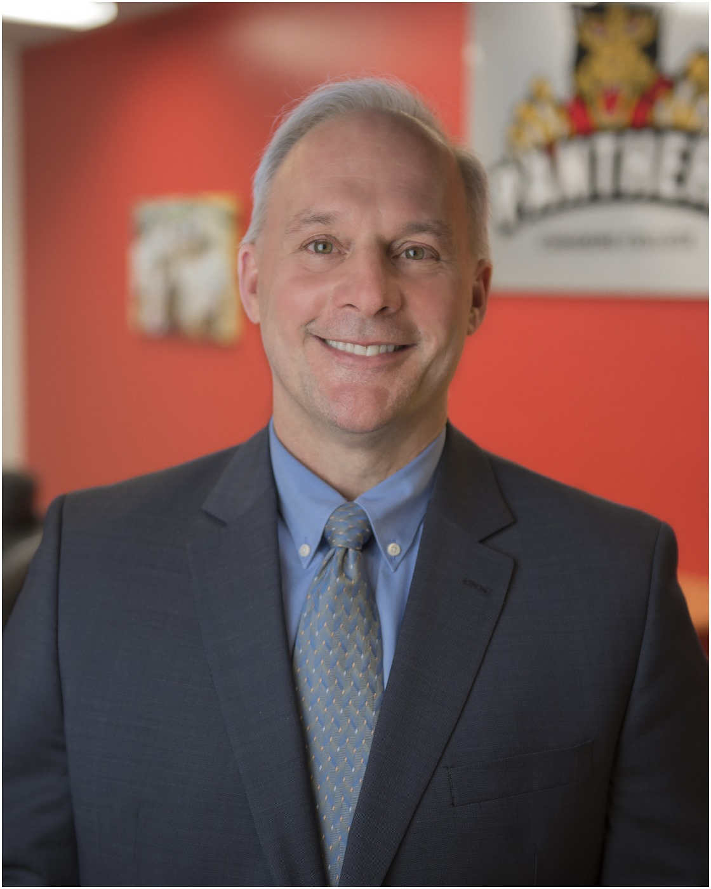

Ask the President
Canadore College is fully committed to student success. This dedication to our students means that we welcome feedback from current and prospective students, parents, faculty, staff, alumni and community members as we continue to enrich the Canadore experience.